철도차량기사 (2003-05-25 기출문제)
1과목: 재료역학
1. 그림과 같이 외팔보에 균일분포하중이 전 길이에 걸쳐 작용할 때 자유단의 처짐 δ는 얼마인가? (단, EI : 강성계수)
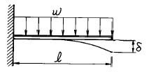
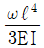
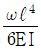
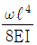
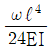
(정답률: 알수없음)

2. 탄성한도내에서 인장력을 받는 강봉의 단위체적당의 변형에너지의 값을 나타내는 식은? (단, σ는 응력, ν는 포아송의 비, E는 탄성계수이다.)
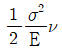
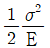
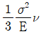
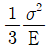
(정답률: 알수없음)
3. 지름 10cm인 연강봉(탄성계수 Es=210 GPa)이 외경 11cm, 내경 10cm인 구리관(탄성계수 Ec=150 GPa)사이에 끼워져 있다. 양단에서 강체평판으로 10kN의 압축하중을 가할 때 연강봉과 구리관에 생기는 응력비 σs/σc의 값은?
- 5/6
- 5/7
- 6/5
- 7/5
(정답률: 알수없음)
4. 그림과 같은 보의 중앙점에서의 굽힘모멘트는?
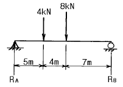
- 45 kN·m
- 34 kN·m
- 48 kN·m
- 38 kN·m
(정답률: 알수없음)
5. 그림과 같이 직선적으로 변하는 불균일 분포하중을 받고 있는 단순보의 전단력선도는?
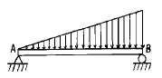
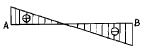
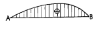
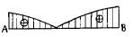
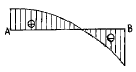
(정답률: 알수없음)
6. 변형체 내부의 한점이 3차원 응력상태에 있고 σx=25MPa, σy=30MPa, τxy=-15MPa 인 평면응력 상태에 있다면, 이 점에서 절대 최대전단 응력의 크기는 몇 MPa 인가?
- 8.3
- 15.2
- 21.4
- 42.7
(정답률: 알수없음)
7. 탄성계수(E)가 200 GPa인 강의 전단탄성계수(G)는? (단, 포아송비는 0.3이다.)
- 66.7 GPa
- 76.9 GPa
- 100 GPa
- 267 GPa
(정답률: 알수없음)
8. 인장하중을 받고 있는 부재에서 전단응력 τ 가 수직응력의 1/2 이 되는 경사단면의 경사각은?
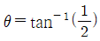
- θ = tan-1(1)
- θ = tan-1(2)
- θ = tan-1(4)
(정답률: 알수없음)
9. 삼각형 단면의 밑변과 높이가 b×h = 20㎝×30㎝일 때 밑변에 평행하고 도심을 지나는 축에 대한 단면 2차모멘트는?
- 22500 cm4
- 45000 cm4
- 5000 cm4
- 15000 cm4
(정답률: 알수없음)
10. 그림과 같이 재질과 단면이 동일하고 길이가 다른 2개의 외팔보를 자유단에서의 처짐이 동일하게 하는 외력의 비 P1/P2 는?
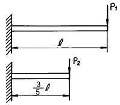
- 0.547
- 0.437
- 0.325
- 0.216
(정답률: 알수없음)
11. 2 Hz로 돌고 있는 중실 원형축이 150 ㎾의 동력을 전달해야 된다고 한다. 허용 전단응력이 40 MPa 일 때 요구되는 최소직경은 몇 mm 인가?
- 115
- 155
- 210
- 265
(정답률: 알수없음)
12. 재질이 같은 A, B 두 균일 단면의 봉에 인장하중을 작용시켜 변형률을 측정하였더니
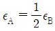
이었다. 봉 B의 단위체적속에 저장되는 탄성에너지는 봉 A의 몇 배 인가?- 4배
- 2배
- 1/2 배
- 1/4 배
(정답률: 알수없음)
13. 그림에서 반력 R1의 크기는 몇 N 인가? (단, 점 A는 하중 P의 작용점이다.)
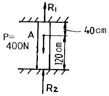
- 200
- 300
- 400
- 100
(정답률: 알수없음)
14. 그림과 같은 돌출보에 집중하중이 A 점에 5 kN과 C 점에 6 kN이 작용하고 있을 때, B 점의 반력은?
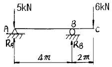
- 9 kN
- 7.5 kN
- 6 kN
- 5 kN
(정답률: 알수없음)
15. 단면적 A의 중립축에 대한 단면 2차모멘트를 IG, 중립축에서 y 거리만큼 떨어진 평행한 축에 대한 단면 2차모멘트를 I 라고 하면 다음 중 옳은 식은?
- I = IG – Ay2
- IG = I + A2y3
- IG = I – Ay2
- I = IG + Ay3
(정답률: 알수없음)
16. 그림과 같은 평면응력 상태에서 최대 주응력은 몇 MPa인가?
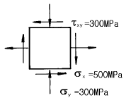
- 500
- 600
- 700
- 800
(정답률: 알수없음)
17. 그림의 도심 G의 위치는 Z 축에서 몇 cm 떨어져 있는가?
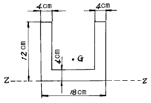
- 4.25
- 4.82
- 5.04
- 5.24
(정답률: 알수없음)
18. 지름 d=5 mm인 와이어로 제작된 반지름 R=3cm의 코일스프링에 하중 P= 1 kN이 작용할 때, 와이어 단면에 생기는 비틀림 응력은 몇 MPa 인가?
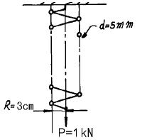
- 1222
- 1322
- 1832
- 2962
(정답률: 알수없음)
19. 길이가 L인 양단 고정보의 중앙점에 집중하중 P가 작용할 때 중앙점의 최대 처짐은? (단, E : 탄성계수, Ⅰ: 단면 2차모멘트)
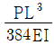
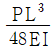
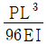
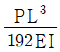
(정답률: 알수없음)
20. 탄성계수 E, 포아송 비 ν, 한변의 길이가 a인 정육면체의 탄성체를 강체인 동일 형태의 구멍에 넣어 압력 P를 가한다. 탄성체와 구멍사이의 마찰을 무시하면 탄성체의 윗면의 변위 δ는?
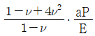
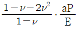
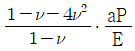
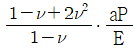
(정답률: 알수없음)
2과목: 내연기관
21. 행정이 98mm인 엔진이 1800rpm으로 회전한다. 피스톤의 평균속도는 얼마인가?
- 2.94 m/s
- 3.50 m/s
- 5.88 m/s
- 11.76 m/s
(정답률: 알수없음)
22. 250rpm으로 운전되는 기관출력이 20000 PS, 연료소비량은 3680kgf/h였다. 연료의 저발열량은 Hℓ =10300kcal/kgf 이다. 제동 열효율 ηb(%) 및 제동 연료소비율 be(gr/PS.h)은?
- ηb=33, be = 154
- ηb=33, be = 184
- ηb=43, be = 184
- ηb=43, be = 154
(정답률: 알수없음)
23. 다음 중 디젤기관의 연료분사 요건에 해당하는 것은?
- 원심력
- 관통력
- 구심력
- 압축력
(정답률: 알수없음)
24. 보쉬형 연료 분사펌프의 설명 중 가장 옳은 것은?
- 플런저행정이 일정하고 스필포트로 토출량을 조절한다
- 플런저행정이 일정하고 흡입밸브로 토출량을 조절한다
- 플런저행정이 일정하고 초크밸브로 토출량을 조절한다
- 플런저행정이 일정하고 슬라이드밸브로 토출량을 조절한다.
(정답률: 알수없음)
25. 가솔린기관과 석유기관을 비교하였다. 석유기관의 특징이 아닌 것은?
- 동일한 기관에서 출력이 낮다.
- 기관의 회전속도가 빠르다.
- 압축비가 낮다.
- 연료의 기화상태가 나쁘다.
(정답률: 알수없음)
26. 가솔린기관의 고속 회전시 회전력이 저하되는 원인은?
- 체적효율의 저하 때문
- 점화시기 지각 때문
- 과농 연소로 인해
- 희박연소로 인해
(정답률: 알수없음)
27. 소구기관을 어선용으로 사용하는 이유에 대한 설명으로 잘못된 것은?
- 제작, 정비 및 운전이 용이하다.
- 수명이 길고, 과부하에 대한 내구성이 크다.
- 기관 자체의 역회전이 가능하다.
- 소형 선박에 최적의 변속기를 설치할 수 있다.
(정답률: 알수없음)
28. 왕복형 내연기관이 증기터빈에 비하여 불리한 점은 무엇인가?
- 유해물질이 배출되고 구조가 복잡하다.
- 운전, 정지등의 조작이 쉽다.
- 소형, 경량으로 제작이 용이하다.
- 연료소비율이 적고 열효율이 높다.
(정답률: 알수없음)
29. 내연기관의 실린더 내에서 가스가 실제로 하는 일량은 이론 사이클로부터 얻어지는 일량보다 적다. 그 원인이 되는 항목 중 가장 관계가 없는 것은?
- 기계적인 손실
- 연소효율의 저하
- 압축비의 감소
- 체적효율의 저하
(정답률: 알수없음)
30. 다음은 피스톤 링이 구비하여야 할 조건이다. 옳지 않은 것은?
- 고온에서 탄성을 유지할 것
- 열 팽창율이 클 것
- 실린더 벽에 대하여 균일한 압력을 줄 것
- 실린더 벽을 마멸시키지 않을 것
(정답률: 알수없음)
31. 공연비가 희박할 때 일어나는 현상이 아닌 것은?
- 기관의 출력저하
- 시동이 어렵다.
- 배기가스의 색이 흑색이 된다.
- 저속 및 공전이 어렵다.
(정답률: 알수없음)
32. 4행정 기관에서 배기 밸브를 상사점 후에 닫는 가장 큰 이유는?
- 흡기 작용을 돕기 위해서
- 연소를 완전히 하기 위해서
- 배기 작용을 돕기 위해서
- 기관을 냉각하기 위해서
(정답률: 알수없음)
33. 1 kgf 의 탄소를 완전히 연소시키는데 필요한 산소량은 얼마인가?
- 4.67 kgf
- 1.67 kgf
- 2.67 kgf
- 3.67 kgf
(정답률: 알수없음)
34. 2행정 cycle기관의 장점은 어느 것인가?
- 흡기 행정의 냉각효과로 실린더 각 부분의 열적 부하가 적고, 출력이 증가한다.
- 밸브기구가 기계적으로 간단하고 부품수가 적고 고장율이 적다.
- 저속에서 고속까지 넓은 범위의 속도변화가 가능하다.
- 각 행정의 작동이 원활히 구분되어 불확실한 행정이 없다.
(정답률: 알수없음)
35. 다음 중 기관의 충진효율을 개선하는 방법에 속하지 않는 것은?
- 흡기온도의 상승을 억제한다.
- 흡, 배기 저항을 저감시킨다.
- 가변 흡기장치를 사용한다.
- 흡기간섭이 발생하는 흡기관을 사용한다.
(정답률: 알수없음)
36. 왕복식 내연기관의 공기표준 사이클에서 가열량 시발점의 온도 및 압력, 최고압력 등이 같은 경우 옳은 것은?
- 오토 사이클이 열효율이 가장 높다.
- 디젤 사이클의 열효율이 가장 높다.
- 복합 사이클의 열효율이 가장 높다.
- 비교할 수 없다.
(정답률: 알수없음)
37. 가솔린기관에서 혼합가스가 점화되어 연소가 진행될때 가장 정상의 연소속도는?
- 0 ~ 10 m/s
- 20 ~ 25 m/s
- 80 ~ 90 m/s
- 150 ~ 160 m/s
(정답률: 알수없음)
38. 기관에 사용되는 윤활유의 구비조건이 아닌 것은?
- 유성이 커야 한다.
- 유동점이 낮아야 한다.
- 점성이 아주 작아야 한다.
- 고온에서 안정성이 있어야 한다.
(정답률: 알수없음)
39. 디젤 사이클의 열효율에 관계하는 사항을 모두 열거하면?
- 압축비, 비열비
- 압축비, 비열비, 압력비
- 압축비, 비열비, 차단비
- 압축비, 비열비, 압력비, 차단비
(정답률: 알수없음)
40. 유량계수 Ca = 0.85, 벤튜리 목부분의 지름 d = 20 mm, 공기의 비중량 γa = 1.226 kgf/m3인 기화기의 유속 V = 40m/sec 일 경우 공기의 유량은 몇 kgf/sec인가?
- 0.013
- 0.⑤2
- 1.013
- 1.107
(정답률: 알수없음)
3과목: 기계설계
41. 두 물체의 간격을 일정하게 유지시켜 체결하는 볼트는?
- T 볼트
- 나비 볼트
- 스테이 볼트
- 캡 볼트
(정답률: 알수없음)
42. 지름이 150mm인 저널 베어링이 120rpm으로 회전하는 전동축을 지지할 때, 발생하는 단위 투상 면적당 마찰일은? (단, 마찰계수 μ =0.006 이고, 허용 압력은 0.08 ㎏f/mm2이며, [저널길이(ℓ )/지름(d)]= 1 이다.)
- 약 4.5 × 10-2 ㎏f· ㎧· mm2
- 약 4.5 × 10-4 ㎏f· ㎧· mm2
- 약 5.6 × 10-2 ㎏f· ㎧· mm2
- 약 5.6 × 10-4 ㎏f· ㎧· mm2
(정답률: 알수없음)
43. 기본부하 용량이 1800㎏f인 볼베어링이 베어링 하중 200㎏f을 받고 150rpm으로 회전할 때, 이 베어링의 수명은?
- 83000시간
- 81000시간
- 76800시간
- 74200시간
(정답률: 알수없음)
44. 플랜지 커플링에서 볼트의 수 6,축지름 120mm,볼트의 피치원 지름 330mm일 때 볼트의 전단에 의해 설계할 경우, 볼트의 지름은 다음 중 얼마가 좋은가? (단,축과 볼트는 동일 재료이다.)
- 12mm
- 16mm
- 21mm
- 26mm
(정답률: 알수없음)
45. 유니버셜 조인트로 연결된 두 축의 교각을 α, 구동축의 일정한 각속도를 ωa라 할 때, 구동축의 임의의 회전각 θ에 있어서의 피동축의 각속도 ωb를 구하는 식은?
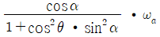
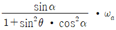
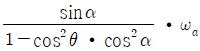
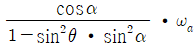
(정답률: 알수없음)
46. 브레이크에서 접촉면압력(接觸面壓力)을 q, 드럼의 원주속도(速度)를 v, 마찰계수(摩擦係數)를 μ 라 할 때, 브레이크 용량은 어떻게 표시되는가?
- μ q/v
- μ qv
- qv/μ
- μ /qv
(정답률: 알수없음)
47. 8 m/sec의 속도로, 8 PS를 전달하는 오픈 평벨트 전동장치에서, 긴장측의 장력은 얼마인가? (단, 긴장측의 장력은 이완측 장력의 3배이다.)
- 75.0 ㎏f
- 100.5 ㎏f
- 112.5 ㎏f
- 150.0 ㎏f
(정답률: 알수없음)
48. 워엄기어에서 워엄의 줄수를 3,워엄휘일의 잇수를 60 이라고 하면 워엄휘일은 얼마로 감속되는가?
- 1/10
- 1/20
- 1/30
- 1/40
(정답률: 알수없음)
49. 원판상(圓板狀)의 밸브를 흐름과 직각인 축의 둘레에 회전 시켜서 유량을 조절하며, 조름밸브(throttle valve)로 보통 사용되는 것은?
- 나비형 밸브
- 슬루스 밸브
- 안전 밸브
- 콕
(정답률: 알수없음)
50. 100(rpm)으로 10(PS)를 전달시키는 직경 40(mm)의 전동축에 b×h×ℓ = 12×8×50(mm3)의 성크키이를 사용하였다. 키이에 발생하는 전단응력은 얼마인가?
- 약 326 (㎏f/㎝2)
- 약 597 (㎏f/㎝2)
- 약 662 (㎏f/㎝2)
- 약 869 (㎏f/㎝2)
(정답률: 알수없음)
51. 리벳이음에서 피치를 P, 리벳지름을 d 라고 할 때, 강판의 파괴에 대한 효율을 타나내는 식으로 옳은 것은?
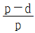
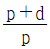
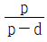
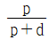
(정답률: 알수없음)
52. 스프링 상수 K1 = 4㎏f/㎝인 스프링에 스프링 상수 K2 = 6㎏f/㎝인 스프링을 직렬로 연결한 후 12㎏f의 힘으로 당기면 늘어난 량은 몇 mm 정도인가?
- 10mm
- 22mm
- 24mm
- 50mm
(정답률: 알수없음)
53. 모듈 4, 외경 60mm인 두개의 외접 표준평치차가 서로 맞물려 있을 때 축간 거리는 얼마인가?
- 52mm
- 56mm
- 60mm
- 100mm
(정답률: 알수없음)
54. 축경 80[mm]의 회전축이 N = 600[rpm]으로, 24[㎾]를 전달시키는 성크키의 압축응력은 약 몇 [㎏f/mm2]인가? (단, 키의 호칭 치수는 b × h × ℓ = 20 × 15 × 120[mm3]이고, 키의 깊이 t = (h/2) 이다.)
- 5.⑤
- 3.04
- 1.08
- 0.02
(정답률: 알수없음)
55. 축방향으로 인장 또는 압축하중을 받는 두축을 연결하는데 사용하는 요소를 다음에서 고르면?
- 클러치
- 키이
- 스플라인
- 코터
(정답률: 알수없음)
56. 볼트(bolt)에 전단력이 작용하는 곳에 많이 사용되며, 이 때 전단면이 반드시 나사부에 걸리지 않도록 하는 볼트는?
- 캡(cap)볼트
- 스터드(stud)볼트
- 리머(reamer)볼트
- 아이(eye)볼트
(정답률: 알수없음)
57. 열간(熱間) 리벳가공(加工)으로 리벳머리를 만들었을 때 리벳과 철판(鐵板)의 온도차가 80℃였다면 냉각후(冷却後)리벳에 생기는 인장응력은 몇 ㎏f/mm2인가? (단, 리벳재료의 탄성계수는 2.0 × 104㎏f/mm2, 선팽창계수는 9 × 10-6/℃,또한 철판은 완전강체(完全剛體)라 한다.)
- 10.5
- 14.4
- 18.3
- 22.6
(정답률: 알수없음)
58. 베어링 번호 6310의 단열 레이디얼 볼베어링에 30000시간의 수명을 주려고 한다. 한계속도지수 dn = 200000이라면,이 베어링의 최고사용 회전수에 있어서의 베어링 하중은? (단, 이 베어링의 기본부하용량 C=4800[㎏f]이며, d는 베어링의 안지름[mm], n는 회전수[rpm]이다.)
- 약 215.5㎏f
- 약 248.6㎏f
- 약 265.3㎏f
- 약 283.1㎏f
(정답률: 알수없음)
59. 직선운동을 회전운동으로 바꾸려고 할 때 다음 중 어느 기어를 사용할 것인가?
- 하이포이드 기어(hypoid gear)
- 제롤기어(zerol gear)
- 스큐우 기어(skew gear)
- 래크와 피니언(rack and pinion)
(정답률: 알수없음)
60. 작은 스프로킷 휘일의 잇수 Z1, 큰 스프로킷 휘일의 잇수 Z2, 체인의 피치 P mm, 축간 거리 C mm인 체인 전동장치에서, 링크의 수로 나타낸 체인의 길이 Ln을 구하는 식으로 옳은 것은?
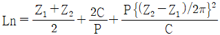
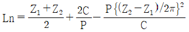
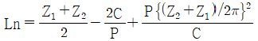
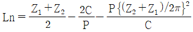
(정답률: 알수없음)
4과목: 철도차량공학
61. 주발전기 계자 중 차동계자 설명에 해당하는 것은?
- 발전자와 병렬로 연결되어 있고 발전자 전류에 의해 여자
- 발전자와 직렬로 연결되어 있고 일정한 출력을 유지
- 발전자와 직렬로 연결되어 있고 부하 전류에 의해 여자
- 발전자 회로와 직렬로 연결되어 있고 발전자 반발작용을 감소
(정답률: 알수없음)
62. 냉방장치 구성 요소 중 고온고압의 냉매가스를 고온(중온)고압의 액체 상태로 변화 하는 곳은?
- 응축기
- 증발기
- 압축기
- 팽창밸브
(정답률: 알수없음)
63. 디젤기관 연소 중 진동 타격음이 발생하는 기간은?
- 후기 연소 기간
- 완만한 연소 기간
- 직접 연소 기간
- 착화 지연 기간
(정답률: 알수없음)
64. 차량의 차체 중량을 지지하고 대차를 차체에 대하여 회전시키며 인장력과 제동력을 전달하는 대차의 주요 부분은?
- 사이드 베어라
- 축상
- 볼스타
- 센터 플레이트
(정답률: 알수없음)
65. 전압형 VVVF(variable voltage, variable frequency)방식의 전동기 형식은?
- 직류 직권 전동기
- 직류 복권 전동기
- 유도 전동기
- 동기 전동기
(정답률: 알수없음)
66. DHC(새마을호 동차)에서 시동모터가 회전하지 않는 경우 여러 가지 확인 개소가 있는데 이 중 해당되지 않는 것은?
- 운전대의 고장 표시등
- 축전지 스위치 투입상태를 확인
- 축전지 휴즈 이완여부 확인
- 윤활유 압력형성 여부 확인
(정답률: 알수없음)
67. 객차의 점퍼선에 대한 설명 중 틀린 것은?
- AC 440 V급 전용으로는 KE - 73K 점퍼 연결전수를 사용 한다.
- 6 심으로 상호 접점이 압착되도록 걸이쇠가 비치되어 있다.
- 상호 연결하지 않을 때는 복스에 넣어 두게 되어 있다.
- 브레이크 제어 점퍼선은 9 심으로 KE – 72A을 사용하여 기관차와 연결 사용한다.
(정답률: 알수없음)
68. 디젤동차의 제어공기 장치에 공급되는 공기압력은?
- 3 kgf/cm2
- 5 kgf/cm2
- 7 kgf/cm2
- 9 kgf/cm2
(정답률: 알수없음)
69. 전기기관차 도유기장치 분사시기 조정은 어느 검종에서 시행하는가?
- 일상 검수
- 2주 검수
- 월상 검수
- 3개월 검수
(정답률: 알수없음)
70. 다음 중 기관과열의 원인이 아닌 것은?
- 냉각수 과충
- 냉각수 부족
- 냉각수 순환불량
- 냉각공기 유통 불량
(정답률: 알수없음)
71. 전기차의 주전동기의 회전수를 960 rpm에서 1320 rpm으로 변화시킬 때 속도는 약 몇 Km/h 증가하는가? (단, 동륜직경은 860 mm, 치차비는 3.2이다.)
- 18.2
- 18.9
- 23.3
- 24.6
(정답률: 알수없음)
72. 윤활의 3 가지 형태 중 하나는?
- 고체윤활
- 마찰윤활
- 기체윤활
- 베어링 윤활
(정답률: 알수없음)
73. 8000 호대 전기기관차의 보조변압기 보조회로에 해당치 않는 것은?
- 150 V 보조회로(코일)
- 220 V 보조회로(코일)
- 260 V 보조회로(코일)
- 380 V 보조회로(코일)
(정답률: 알수없음)
74. 자동 승강문에 대한 설명으로 맞는 것은?
- 문의 개폐시 불규칙한 곡선운동을 하므로 가이드에 볼베어링이 장착되어 있다.
- 승객이 끼는 것을 방지하기 위해 도어엔진이 장착되어 있다.
- 문 개폐밸브는 DC 24 V 전원으로 구동된다.
- 열차 속도가 5 km/h 이상이 되면 승강문을 열 수 없다.
(정답률: 알수없음)
75. 4 행정사이클 기관의 실린더 평균 유효압력 6.37 kgf/cm2, 실린더직경 = 130 mm, 행정 = 160 mm, 실린더수 = 8, 기관회전수 = 1500 rpm일 때 기관의 도시마력은?
- 160 HP
- 170 HP
- 180 HP
- 190 HP
(정답률: 알수없음)
76. 고무 완충기의 장점 중 틀린 것은?
- 마모가 적다.
- 내구성이 좋다.
- 방음 효과가 적다.
- 고장이 적다.
(정답률: 알수없음)
77. 다음 중 LN 제동장치의 특징은?
- 완해작용을 계단적으로 할 수 있다.
- 전열차에 동시에 제동이 작용한다.
- A 동작변이 설치되어 있다.
- 급동 공기통이 있다.
(정답률: 알수없음)
78. 저항제어 전동차의 M차에 설치된 기기는?
- 주 제어기 함
- 팬터 그래프
- 고속도 차단기 함
- 주 차단기
(정답률: 알수없음)
79. 대차 복원력이 크면 기관차 운영상 어떤 영향을 끼치는가?
- 운전중 상하동이 있다.
- 대차 후렌지 마모가 크다.
- 대차 후렌지 마모가 없다.
- 곡선 통과시 탈선 염려가 적다.
(정답률: 알수없음)
80. 기관 연료소비율 f가 182 g/HP/h, 연료저위 발열량 HL가 1⑤00 kcal, 견인마력 P가 1 HP일 때의 기관의 열효율 η는? (단, 1 HPh는 623 Kcal임)
- 29 %
- 31 %
- 33 %
- 35 %
(정답률: 알수없음)
5과목: 기계제작법
81. 지름 50 mm 인 연강봉을 20 m/min 의 절삭속도로 선삭할 때 주축의 회전수는?
- 약 100 rpm
- 약 127 rpm
- 약 440 rpm
- 약 500 rpm
(정답률: 알수없음)
82. 측정대상과 독립적으로 크기를 조정할 수 있는 표준량을 표준기로 사용하여, 표준량을 미지의 측정량에 합치시키므로서, 그 표준량의 크기로 측정치를 구하는 방법은?
- 편위법
- 영위법
- 보상법
- 치환법
(정답률: 알수없음)
83. 디프 드로잉(deep drawing) 율의 식은?
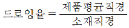
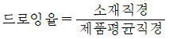
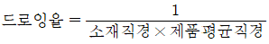
- 드로잉율 = 소재직경 - 제품평균직경
(정답률: 알수없음)
84. 강선을 같은 곳에서 되풀이 하여 굽히면 그곳이 부러지는 것은 잘 알고 있는 사실이다. 이때 점차 굽히기 어려워지는 것을 느낀다. 그 이유는 무엇 때문인가?
- 소성변형
- 조직의 변화
- 열간가공
- 가공경화
(정답률: 알수없음)
85. 방전가공에서 가장 기본적인 회로는?
- RC 회로
- 임펄즈발전기 회로
- 트랜지스터 회로
- 고전압법 회로
(정답률: 알수없음)
86. 공구수명을 판정하는 것 중 틀리는 것은?
- 가공면에 광택이 있는 무늬 또는 점들이 생길 때
- 절삭저항의 주분력에는 변화가 없어도 배분력이나 이송방향 분력이 급격히 증가 하였을 때
- 완성치수의 변화가 일정량에 미달할 때
- 날의 마멸이 일정량에 달할 때
(정답률: 알수없음)
87. 목형에 구배를 만드는 이유는 다음 중 어느 것인가?
- 쇳물의 주입이 잘 되게 하기 위하여
- 주형에서 목형을 쉽게 뽑기 위하여
- 목형을 튼튼히 하기 위하여
- 목형을 지지하기 위하여
(정답률: 알수없음)
88. 선반 베드 표면을 경화시키기 위한 가장 적당한 방법은?
- 플레임 하드닝(flame hardening)
- 솔트 배스(salt bath)를 사용한 열처리
- 질화 열처리(nitriding)
- 전기로에 의한 열처리
(정답률: 알수없음)
89. 이미 가공되어 있는 구멍에 다소 큰 볼을 구멍에 압입하여 구멍 표면에 소성변형을 일으키게 하여 정밀도가 높은 면을 얻는 가공법은?
- 버니싱(burnishing)
- 숏 피닝(shot peening)
- 배럴 다듬질(barrel finishing)
- 버핑(buffing)
(정답률: 알수없음)
90. 플레인 밀링머신중, 컬럼에서 수평으로 뻗어나온 부분이며 컬럼면을 따라 상하로 이동시키는 것은?
- 니이(knee)
- 테이블(table)
- 새들(saddle)
- 스핀들(spindle)
(정답률: 알수없음)
91. 공기 마이크로미터의 특징을 설명한 것 중 틀린 것은?
- 배율이 높다.
- 정도(精度)가 좋다.
- 압축 공기원(콤프레셔 등)은 필요 없다.
- 1개의 피측정물의 여러 곳을 1번에 측정한다.
(정답률: 알수없음)
92. 두께 2mm , C = 0.2%의 경질 탄소강판(硬質 炭素鋼板)에 지름 25mm 의 구멍을 펀치로 뚫을 때, 전단하중 P = 3140 kgf라면 이때 전단응력은 얼마인가?
- 약 20 kgf/mm2
- 약 25 kgf/mm2
- 약 30 kgf/mm2
- 약 40 kgf/mm2
(정답률: 알수없음)
93. 주축의 웜기어와 웜축의 웜의 비가 20 : 1인 분할대가 있다. 이 분할대에서 33구멍 분할판을 3구멍씩 분할한다면 이 때 분할되는 수는 얼마가 되겠는가?
- 440
- 220
- 11
- 33
(정답률: 알수없음)
94. 용접 부위의 검사방법으로 파괴검사는 어느 것인가?
- 방사선 투과검사
- 자기분말검사
- 초음파 검사
- 금속조직검사
(정답률: 알수없음)
95. 연삭숫돌의 결합제 중 절단용 숫돌로 적당한 것은?
- V
- S
- R
- U
(정답률: 알수없음)
96. 불활성가스 아크용접 (arc-welding)에서 사용되는 불활성 가스는?
- 수소, 네온
- 크세논, 아세틸렌
- 크립톤, 산소
- 헬륨, 아르곤
(정답률: 알수없음)
97. 그림과 같이 삼침을 이용하여 미터나사의 유효지름(d2)를 구하고자 한다. 올바른 식은? (단, P : 나사의 피치, d : 삼침의 지름, M : 삼침을 넣고 마이크로미터로 측정한 치수)
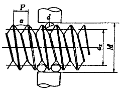
- d2=M+d+0.86603P
- d2=M-d+0.86603P
- d2=M-2d+0.86603P
- d2=M-3d+0.86603P
(정답률: 알수없음)
98. 드로잉(drawing)시에 역장력을 가함으로서 얻어지는 효과에 대한 다음 사항 중 틀린 것은?
- 드로잉 저항이 감소된다.
- 다이면에 발생되는 압력이 감소된다.
- 다이 수명이 길어진다.
- 가공된 재질이 좋아진다.
(정답률: 알수없음)
99. 주철에 Mg를 첨가하고, Fe-Si로 접종한 주철은?
- 미하나이트 주철
- 구상흑연 주철
- 가단 주철
- 펄라이트 주철
(정답률: 알수없음)
100. 케이스 하드닝(case hardening)을 올바르게 설명한 것은?
- 고체 침탄법을 말한다.
- 가스 침탄법을 말한다.
- 액체 침탄법을 말한다.
- 침탄후 담금질 열처리를 말한다.
(정답률: 알수없음)
이유는, 외팔보에 균일분포하중이 작용할 때 자유단의 처짐은 하중의 크기와 길이, 그리고 구조물의 강성계수에 따라 결정된다. 이 문제에서는 하중과 길이가 주어졌고, 강성계수 EI도 주어졌으므로, 위의 식을 이용하여 자유단의 처짐을 계산할 수 있다. 계산 결과, 정답은 "" 이다.